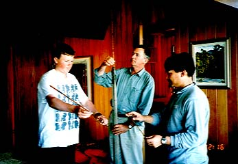
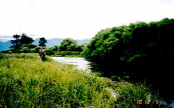
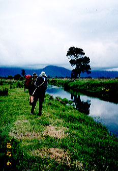

Photo Gallery
98/12/05 At a spring creek

Granpa's fly rods.
Friday afternoon, we enjoyed a nice tea time. Brent told us his old fishing stories, and showed us his father's old split cane fly rods. Nori and I set up those rods and tried to swing. I remembered that my father and my brothers used to do the same thing in our house.

Searching for trout.
Where is the shadow which is moving, where is the silhouette which is not moving? We stalked on the stream bank, and searched any likely movements. The time of excitement and patient. But the rough river bank and muddy bed were very difficult to walk along.

A rise ring as far in the distance.
A subtle rise ring had happened, then it has disappeared. We gazed upon the rise ring immediately.
Photo Gallery Contents
Home